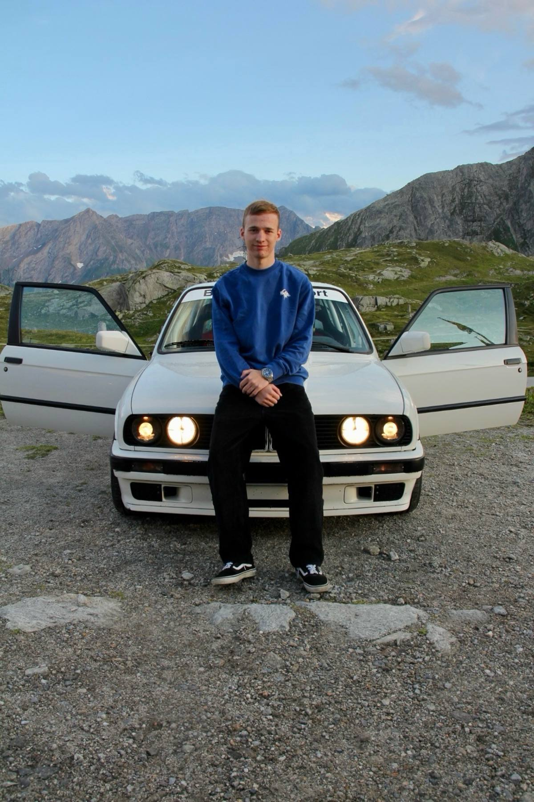

Ich fahre Bergrennen und Rallye. Angefangen hat das am Simulator, weiter ging es im Kart, und jetzt steht ein eigenes Auto in der Garage.

Am Motorsport reizt mich, dass er nichts verzeiht und nichts geschenkt gibt. Am Berg zählt ein einziger Lauf: kein zweiter Versuch, keine Runde, auf der sich ein Fehler noch ausbügeln lässt. In der Rallye kommt dazu, dass man eine Strecke fährt, die man nicht kennt, und einem Zettel und dem Menschen daneben vertrauen muss.
Zuerst am Simulator, Stage für Stage: Aufschrieb lesen, Bremspunkte finden, verstehen, was ein Auto unter Last macht. Danach Rental-Karting mit echter Startaufstellung und echten Gegnern — die günstigste Art, Renndistanz zu sammeln.
Die erste eigene Saison sauber durchbringen: ankommen, Zeiten sammeln, aus jedem Start etwas mitnehmen. Ein Klassenpodest wäre schön, ist aber nicht das Ziel für das erste Jahr — gefahrene Kilometer sind mehr wert als ein einzelnes Resultat.
Eine Saison im Motorsport kostet Geld, und ohne Partner geht es nicht. Wer wissen will, was eine Zusammenarbeit bringt, findet die Unterlagen auf der Partner-Seite.